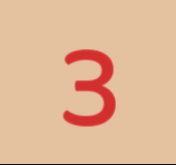

Bandeiras: São seu único item no jogo e vão servir pra marcar onde estão as minas que você já descobriu
você pode coloca-las com o botão direito do mouse
Minas: vão estar espalhadas por todo o tabuleiro e são suas principais inimigas,
precisa evita-las a todo custo, pois se pisar em uma só, o jogo acaba

Números: São seus indicadores de quantas bombas há num raio de 8 quadrados, vão ser seus guias
durante todo o jogo